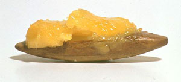

Joseph Beuys: fat & other unstable media
Tierdenkmal, 1961
[Chocolate]
Stuhl mit Fett, 1963
Fettbatterie, 1963
Ohne Titel, 1968
Objekt zum schmieren und drehen, 1972
Nassbatterie, 1972-73
Georges Bataille: "Informe"". . . un terme servant à déclasser, exigeant généralement que chaque chose ait sa forme. Ce qu'il désigne n'a ses droits dans acucun sens et se fait écraser partout comme une araignée ou un ver de terre. Il faudrait en effet, pour que les hommes académiques soient contents, que l'univers prenne forme. La philosophie entière n'a pas d'autre but: il s'agit de donner un redingote à ce qui est, une redingote mathématique. Par contre affirmer que l' univers ne ressemble à rien et n'est qu' informe revient à dire que l'univers est quelque chose comme une araignée ou un crachat."
Georges Bataille: "Informe." Documents 7 (December 1929), p. 382. [Reprinted in: Oeuvres Complètes I, Paris: Gallimard, 1970, p. 217. (And in: Yve-Alain Bois & Rosalind Krauss: L'Informe. Mode d'Emploi. Paris: Centre Georges Pompidou, 1996, p. 6.) English translation: "Formless." In: Georges Bataille: Visions of Excess. Selected Writings, 1927-1939. Minneapolis: University of Minnesota Press, 1985, p. 31.]
Rosalind Krauss: "Non à Joseph Beuys"Yve-Alain Bois and Rosalind Krauss wrote an extensive series of essays about various connections between twentieth-century art and Bataille's notion of formlessness. (L'Informe: Mode d'Emploi. Paris: Centre Georges Pompidou, 1996.) They embrace Bataille's anti-intellectual, nihilistic insights, and project them onto the experiments with "formlessness" in modern art. From this perspective, they dismiss Joseph Beuys – because Beuys celebrates useless, stupid, shapeless things, and gives them a positive, nostalgic, almost religious charge. [Rosalind Krauss: "Non à Joseph Beuys." B&K pp. 136-137.]
It is true that Beuys demonstrated an optimistic attitude which is incompatible with Bataille's Nietzschean mindset. He thus paved the way for dubious Germanic artists such as Ferenc Kiefer, Hermann Nitsch, Georg Baselitz, and Markus Lüpertz. But it would be silly to ignore him for that reason. If we are interested in formlessness, we must be interested in Joseph Beuys. He consistently used a language of non-shapes at an art-historical moment when that was completely unfashionable. In the happy, shiny, hard-edged world of Pop Art, Op Art, Zero, and Minimalism, Beuys reintroduced messy, dirty, entropic shit. In doing this, he had a decisive influence on Robert Morris, Eva Hesse, Robert Smithson, Bruce Naumann and countless others – artists who explored "formlessness" in a more formalist way, without the positive meanings that Beuys attached to this enterprise, but also without Bataille's existential despair.
Remko Scha, 2005/2007